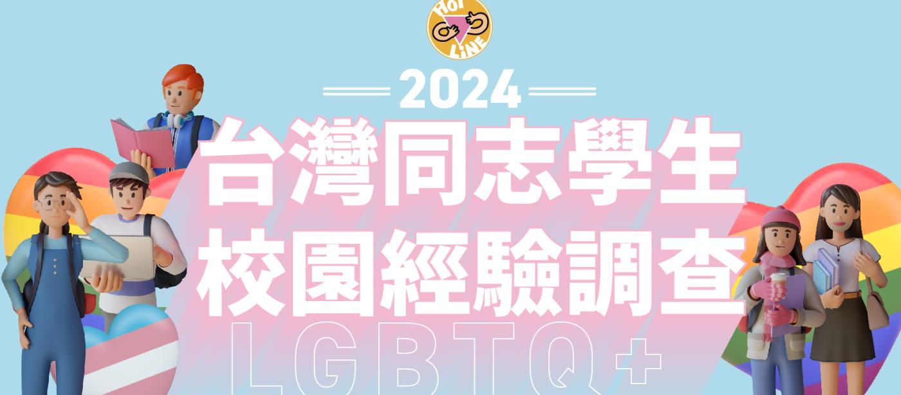

最新消息
更多訊息

13
8月
2024-08-13【公告】08/17適逢本會募款活動，接線服務暫停一晚
2024/08/17（六）適逢本會年度募款感恩會，本會接線（含線上語音諮詢服務）服務暫停一晚，2024/08/18
(...
24
7月
2024-07-24【公告】因應颱風宣告停班課，本會接線服務07/25（四）暫停一次
因凱米颱風來襲，明日（07/25）北北基達停班停課標準，本會諮詢電話服務（含父母專線）暫停服務一天！...

24
7月
2024-07-24【公告】因應颱風宣告停班課，本會接線服務07/25（四）暫停一次
因凱米颱風來襲，明日（07/25）北北基達停班停課標準，本會諮詢電話服務（含父母專線）暫停服務一天！...
最新活動
更多活動
2024年，同婚通過第5年，熱線成立第26年。
時間改變了許多人、許多事，
帶著不一樣的身份，
從前，我們隱藏；如今，我們成為日常。
從前，我們獨行；現在，我們驕傲成群。
從前，...

▼櫃父母下午茶-台中8月場▼ 『本次主題：同志子女的人生進程』 總是很迷惘同志子女的未來規劃嗎？ 不知道同志子女會不會孤老終身？ 覺得同志的人生規劃總是很特別？
該怎麼跟同志子女聊結婚、...

長期伴侶關係是一段漫長的旅程，沿途充滿美景，也伴隨著需要調整和解決的問題，甚至會遇到反覆的爭執，感覺前路坎坷，彷彿走入死胡同。 無論妳是走過同樣困難或是正在困境中尋找方向的朋友，...
2024年，同婚通過第5年，熱線成立第26年。 時間改變了許多人、許多事， 帶著不一樣的身份， 從前，我們隱藏；如今，我們成為日常。 從前，我們獨行；現在，我們驕傲成群。 從前，...
資訊專線
02-2392-1970
諮詢時間
每週一四五六日
19:00~22:00
父母諮詢
由同志的父母接聽
02-2392-1970
諮詢時間
每週二 18:00-21:00
每週四 14:00-17:00